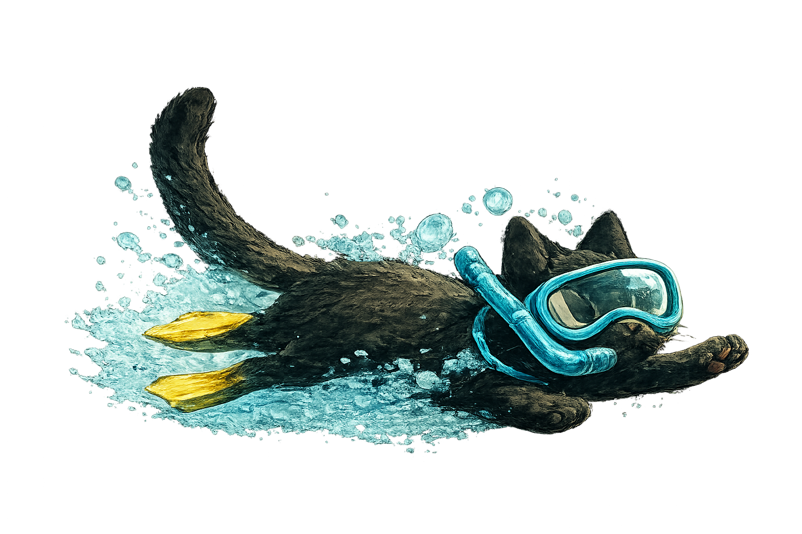
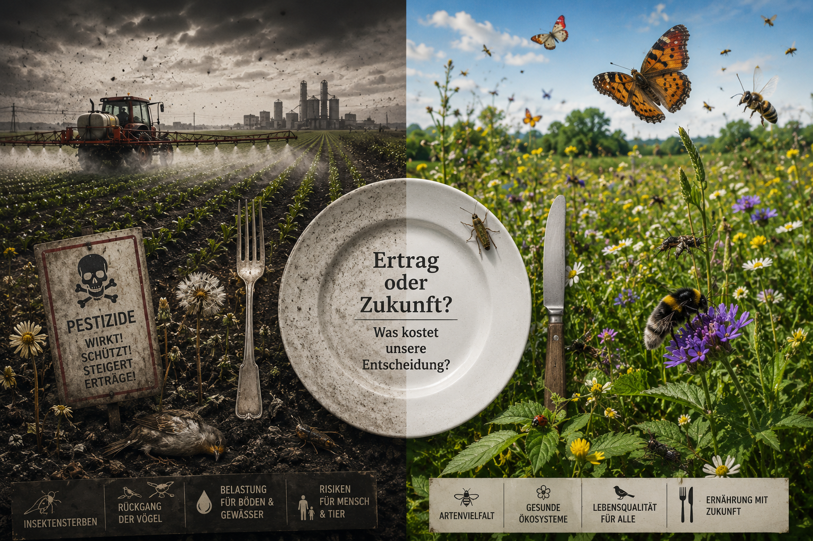

Verstehen
Habe Mut, selbst zu denken
Über Mündigkeit, Verantwortung und die Versuchung, andere für uns urteilen zu lassen
Light up Reader
Manche Muster werden erst sichtbar, wenn wir unter die Oberfläche tauchen.

Texte in diesem Raum
Verstehen
Über Mündigkeit, Verantwortung und die Versuchung, andere für uns urteilen zu lassen

Verstehen
Über Normalität, Normen und die Menschen dazwischen

Verstehen
Haben wir ein Problem gelöst – oder nur gegen ein anderes ausgetauscht?

Verstehen
Ein Schuljahr besteht nicht nur aus Unterrichtsstoff.

Verstehen
Warum gelungene Förderung mehr zeigen muss als Leistung.

Verstehen
Warum Abweichung soziale Lesbarkeit irritiert.

Verstehen
Über Erfahrungen, die real sind, ohne vollständig messbar zu sein.

Verstehen
Warum die Reflexion der eigenen Perspektive zur Erkenntnis gehört

Verstehen
Wie Gesellschaften festlegen, welche Formen von Wirklichkeit als wirklich gelten dürfen

Verstehen
Über Denkraumverengung, institutionelle Hoheit und den Verlust von Autonomie

Verstehen
Wie die Aufmerksamkeitsökonomie der Zukunft den Menschen verändert

Verstehen
Manche Gedanken verändern nicht nur Antworten – sondern die Art, wie wir überhaupt fragen.
Verstehen
Was geschieht, wenn Nahrung immer perfekter wird – und gleichzeitig ihren Ursprung verliert?

Verstehen
Jede Verbesserung verändert auch die Bedingungen, unter denen wir leben.
Verstehen
Manchmal entstehen die größten Bedrohungen dort, wo wir sie am wenigsten erwarten.
Verstehen
Über Mündigkeit, Verantwortung und die Versuchung, andere für uns urteilen zu lassen
„Aufklärung ist der Ausgang des Menschen aus seiner selbstverschuldeten Unmündigkeit.“
Mit diesem Satz formulierte Immanuel Kant im Jahr 1784 einen Gedanken, der bis heute erstaunlich aktuell geblieben ist. Sein berühmter Wahlspruch lautete:
„Habe Mut, dich deines eigenen Verstandes zu bedienen.“
Doch was bedeutet das eigentlich?
Oft wird Mündigkeit mit Volljährigkeit verwechselt. Wer achtzehn Jahre alt wird, gilt als erwachsen. Er darf Verträge unterschreiben, wählen gehen, Auto fahren und über sein eigenes Leben entscheiden. Doch all diese Rechte beantworten noch nicht die eigentliche Frage:
Wann ist ein Mensch wirklich mündig?
Kant verstand darunter nicht einen juristischen Status, sondern eine Haltung. Mündig ist nicht derjenige, der alt genug ist. Mündig ist derjenige, der bereit ist, selbst zu urteilen.
Das klingt zunächst einfach.
Tatsächlich aber ist Mündigkeit anstrengend.
Wer selbst urteilt, kann sich irren. Wer selbst entscheidet, trägt Verantwortung für die Folgen. Wer eigenständig denkt, muss Unsicherheit aushalten und kann die Schuld nicht ohne Weiteres auf andere übertragen.
Genau darin liegt das eigentliche Problem.
Freiheit wünschen sich viele Menschen. Die Verantwortung, die mit ihr einhergeht, deutlich weniger.
So entsteht eine Versuchung, die Kant bereits vor mehr als zweihundert Jahren erkannte. Es ist oft bequemer, andere für uns denken zu lassen. Experten, Behörden, Institutionen, Fachleute oder gesellschaftliche Mehrheiten bieten Orientierung. Sie versprechen Sicherheit in einer Welt, die zunehmend komplex erscheint.
Daran ist zunächst nichts Verwerfliches.
Kein Mensch kann jedes Fachgebiet beherrschen. Niemand kann sämtliche wissenschaftlichen Erkenntnisse überprüfen, jedes Gesetz verstehen oder jede medizinische Studie lesen. Wir alle sind auf Wissen angewiesen, das andere erarbeitet haben.
Das Problem beginnt nicht mit Expertise.
Das Problem beginnt dort, wo Orientierung zu Abhängigkeit wird.
Wenn aus einer Empfehlung eine Vorschrift wird.
Wenn aus fachlicher Einschätzung eine unangreifbare Wahrheit wird.
Wenn Menschen nicht mehr fragen:
„Ist das überzeugend?“
sondern lediglich:
„Wer hat das gesagt?“
An diesem Punkt verschiebt sich etwas. Nicht die Qualität einer Aussage steht im Mittelpunkt, sondern die Autorität desjenigen, der sie äußert.
Die Geschichte kennt viele Beispiele dafür.
Die Aufklärung richtete sich einst gegen die Vorstellung, Wahrheit könne allein aus Tradition, Stand oder religiöser Autorität abgeleitet werden. Menschen sollten lernen, selbst zu prüfen und selbst zu denken.
Doch Autoritäten verschwinden selten. Oft wechseln sie lediglich ihre Gestalt.
An die Stelle alter Gewissheiten treten neue.
An die Stelle religiöser Autoritäten treten wissenschaftliche, politische, therapeutische oder administrative Autoritäten.
Dabei geht es nicht darum, Fachwissen abzulehnen. Im Gegenteil: Wissen ist wertvoll. Erfahrung ist wertvoll. Forschung ist wertvoll.
Die schwierigere Aufgabe lautet:
Wie nutzen wir die Erkenntnisse anderer, ohne unser eigenes Urteilsvermögen aufzugeben?
Denn Mündigkeit bedeutet nicht, alles besser zu wissen.
Mündigkeit bedeutet, Verantwortung für das eigene Urteil zu übernehmen.
Dazu gehört die Bereitschaft zuzuhören.
Dazu gehört die Fähigkeit, Argumente abzuwägen.
Dazu gehört aber auch der Mut, Fragen zu stellen, wenn etwas nicht nachvollziehbar erscheint.
Eine Gesellschaft aus mündigen Menschen wäre deshalb keine Gesellschaft ohne Experten.
Sie wäre eine Gesellschaft, in der Expertise Orientierung bietet, ohne das Denken zu ersetzen.
Kants Frage ist heute sogar aktueller als zu seiner Zeit.
Noch nie zuvor standen uns so viele Informationen zur Verfügung.
Noch nie zuvor gab es so viele Möglichkeiten, Entscheidungen an andere zu delegieren.
Und noch nie zuvor war die Versuchung so groß, das eigene Urteil gegen die Sicherheit fremder Gewissheiten einzutauschen.
Mündigkeit beginnt daher nicht mit Wissen.
Sie beginnt mit der Bereitschaft, Verantwortung für das eigene Denken zu übernehmen.
Oder, um es mit Kant zu sagen:
Habe Mut, dich deines eigenen Verstandes zu bedienen.
Verstehen
Über Normalität, Normen und die Menschen dazwischen
Normalität erscheint uns oft selbstverständlich.
Wir sprechen von normalen Familien, normalen Kindern, normalen Lebensläufen, normalen Verhaltensweisen und normalen Ansichten. Kaum jemand hält inne und fragt, was dieses Wort eigentlich bedeutet. Dabei beeinflusst es unseren Blick auf die Welt stärker, als uns meist bewusst ist.
Denn Normalität ist zunächst weder richtig noch falsch.
Normalität ist vor allem eines:
Eine Beschreibung.
Sie beschreibt das, was häufig vorkommt. Das, was wir gewohnt sind. Das, was uns vertraut erscheint.
Doch genau an dieser Stelle beginnt eine Verwechslung.
Aus der Beschreibung wird eine Erwartung.
Aus der Erwartung wird eine Norm.
Und aus der Norm wird irgendwann ein Maßstab, an dem Menschen gemessen werden.
Dabei ist die Tatsache, dass etwas häufig vorkommt, noch kein Beweis dafür, dass es richtig ist. Ebenso wenig bedeutet Seltenheit, dass etwas falsch sein muss.
Wer genauer hinschaut, entdeckt schnell, dass viele der Menschen, die unsere Welt geprägt haben, alles andere als gewöhnlich waren. Künstler, Philosophen, Entdecker, Erfinder und Grenzgänger bewegten sich oft außerhalb der Erwartungen ihrer Zeit. Manche galten als exzentrisch. Andere als unbequem. Wieder andere wurden schlicht nicht verstanden.
Dennoch stellen wir uns selten die Frage, warum Gesellschaften überhaupt Normen hervorbringen.
Normen schaffen Orientierung.
Sie helfen uns, miteinander zu kommunizieren. Sie erzeugen Vorhersagbarkeit. Sie stiften Gemeinschaft. Wer ähnliche Werte teilt, ähnliche Gewohnheiten hat oder ähnliche Erfahrungen macht, empfindet leichter Zugehörigkeit.
Ein „Wir“ entsteht.
Doch mit jedem „Wir“ entsteht auch ein „Nicht-Wir“.
Gemeinsamkeiten verbinden Menschen. Nicht selten stärkt sogar die Abgrenzung gegenüber anderen das Gefühl der Zusammengehörigkeit. Dieser Mechanismus ist weder neu noch außergewöhnlich. Er findet sich in Familien, Vereinen, politischen Gruppen, Religionen und Gesellschaften gleichermaßen.
Entscheidend ist deshalb nicht, ob Normen existieren sollten.
Entscheidend ist:
Was geschieht mit den Menschen, die von ihnen abweichen?
Denn nicht jede Abweichung ist gleich.
Wenn eine Norm andere Menschen schützt – etwa das Verbot von Gewalt oder Betrug –, erscheint ihre Durchsetzung nachvollziehbar. Hier geht es um konkrete Schäden und konkrete Schutzgüter.
Anders verhält es sich bei Menschen, die niemandem schaden.
Menschen, die anders denken.
Anders lernen.
Anders fühlen.
Anders wahrnehmen.
Anders leben.
Menschen, die sich nicht ohne Weiteres in die vorgesehenen Schubladen einordnen lassen.
Gerade sie geraten oft unter Druck.
Nicht weil sie etwas Falsches getan hätten.
Sondern weil ihre bloße Existenz die Grenzen der Kategorien sichtbar macht.
Sie erinnern uns daran, dass die Wirklichkeit vielfältiger ist als unsere Vorstellungen von ihr.
Genau darin liegt die eigentliche Schwierigkeit.
Normen sind hilfreich, solange sie Orientierung geben.
Problematisch werden sie dort, wo aus Orientierung Bewertung wird.
Wenn aus „anders“ ein „falsch“ wird.
Wenn aus „ungewöhnlich“ ein „mangelhaft“ wird.
Wenn Menschen Nachteile erfahren, nicht weil sie anderen geschadet haben, sondern weil sie nicht den Erwartungen ihrer Umgebung entsprechen.
Dann verwandelt sich die Norm von einem Werkzeug der Orientierung in ein Instrument der Ausgrenzung.
Eine offene Gesellschaft erkennt man deshalb nicht daran, dass sie keine Normen besitzt.
Eine solche Gesellschaft wird es vermutlich nie geben.
Man erkennt sie vielmehr daran, wie sie mit ihren Abweichungen umgeht.
Ob sie versucht, jeden Menschen in eine Schublade zu pressen.
Oder ob sie akzeptiert, dass manche Menschen zu groß für Schubladen sind.
Gerade diese Menschen können neue Perspektiven eröffnen.
Die Fragen stellen, wo andere Antworten erwarten.
Die Wege sehen, wo andere Mauern erkennen.
Und die uns daran erinnern, dass Normalität niemals die ganze Wirklichkeit sein kann.
Denn die Welt war schon immer größer als die Kategorien, mit denen wir versuchen, sie zu ordnen.
Verstehen
Haben wir ein Problem gelöst – oder nur gegen ein anderes ausgetauscht?
Manche gesellschaftlichen Veränderungen erscheinen auf den ersten Blick eindeutig.
Früher durften viele Frauen nicht arbeiten.
Heute können sie es.
Diese Entwicklung war für viele Menschen eine wichtige Errungenschaft. Erwerbsarbeit bedeutete wirtschaftliche Unabhängigkeit, größere Selbstbestimmung und die Möglichkeit, den eigenen Lebensweg freier zu gestalten.
Doch eine zweite Frage drängt sich auf.
Nicht, ob diese Entwicklung richtig war.
Sondern wie ihre Rechnung aussieht.
Denn eines hat sich nie verändert.
Der Tag besitzt noch immer 24 Stunden.
Kinder verschwanden nicht.
Haushalte verschwanden nicht.
Pflege verschwand nicht.
Kochen verschwand nicht.
Einkaufen verschwand nicht.
Haustiere verschwanden nicht.
Der Alltag verschwand nicht.
All diese Aufgaben blieben bestehen.
Hinzu kam für viele Menschen die Möglichkeit – und häufig auch die Erwartung –, zusätzlich einer Erwerbstätigkeit nachzugehen.
Damit verändert sich eine einfache Rechnung.
Erwerbsarbeit ersetzt die übrigen Aufgaben nicht.
Sie kommt zu ihnen hinzu.
Die Frage lässt sich deshalb ganz nüchtern stellen.
Wie soll ein Mensch innerhalb von 24 Stunden einer Vollzeitbeschäftigung nachgehen, Kinder begleiten, sich um pflegebedürftige Angehörige kümmern, einkaufen, kochen, putzen, den Haushalt organisieren, Haustiere versorgen, Freundschaften pflegen und dabei noch ausreichend schlafen, sich erholen oder einfach einmal Zeit für sich selbst finden?
Für Alleinerziehende stellt sich diese Frage oft noch dringlicher.
Nicht weil ihnen Motivation oder Leistungsbereitschaft fehlen würden.
Sondern weil dieselben 24 Stunden nicht plötzlich mehr Aufgaben aufnehmen können.
Genau hier liegt ein blinder Fleck vieler gesellschaftlicher Debatten.
Wir sprechen häufig darüber, welche Möglichkeiten hinzugekommen sind.
Deutlich seltener fragen wir, welche Zeitbudgets sich dadurch verändert haben.
Woher kommen die zusätzlichen Stunden?
Natürlich hat sich vieles verändert. Technische Hilfsmittel erleichtern den Alltag. Dienstleistungen übernehmen Arbeiten, die früher innerhalb der Familie erledigt wurden. Kinder verbringen heute häufig schon früh einen erheblichen Teil ihres Tages in Betreuungseinrichtungen. Pflege älterer Menschen wird zunehmend von professionellen Einrichtungen übernommen. Mahlzeiten werden häufiger außer Haus eingenommen oder durch industriell hergestellte Produkte ersetzt.
Keine dieser Entwicklungen ist für sich genommen zwangsläufig gut oder schlecht.
Auffällig ist jedoch, dass Fürsorgearbeit nicht verschwunden ist.
Sie hat vielfach ihren Ort verändert.
Darin liegt keine moralische, sondern eine strukturelle Konsequenz.
Wenn innerhalb derselben 24 Stunden mehr Aufgaben erfüllt werden sollen, müssen andere Aufgaben vereinfacht, ausgelagert oder abgegeben werden.
Das ist zunächst keine Frage von Fleiß.
Es ist eine Frage der Möglichkeit.
So beurteilen wir Menschen manchmal nach einem Maßstab, den niemand dauerhaft erfüllen kann.
Nicht weil Menschen weniger belastbar geworden wären.
Sondern weil die Rechnung selbst immer anspruchsvoller geworden ist.
Die eigentliche Errungenschaft bestand nie darin, dass Frauen arbeiten müssen.
Sie bestand darin, arbeiten zu dürfen.
Sie bestand in der Möglichkeit, zwischen unterschiedlichen Lebensentwürfen wählen zu können.
Die gesellschaftliche Debatte sollte sich deshalb weniger darum drehen, welches Familienmodell das richtige ist.
Sie beginnt mit einer einfacheren Frage:
Wie schaffen wir echte Wahlfreiheit, wenn der Tag für alle Menschen weiterhin nur 24 Stunden hat?
Zukünftige technische Entwicklungen – von Automatisierung bis hin zur Künstlichen Intelligenz – werden genau an dieser Stelle interessant. Nicht, weil sie menschliche Beziehungen ersetzen könnten, sondern weil sie Routinen übernehmen und dadurch etwas zurückgeben, das sich bislang nicht vermehren ließ:
Zeit.
Zeit ist damit eine der eigentlichen Währungen moderner Gesellschaften.
Fortschritt beginnt nicht erst dort, wo wir immer mehr leisten können.
Sondern dort, wo wir wieder mehr Zeit für das haben, was sich durch nichts ersetzen lässt.
Verstehen
Klassensprünge werden häufig als Erfolgsgeschichte erzählt.
Ein besonders begabtes Kind erhält anspruchsvolleren Unterricht, wird weniger unterfordert und kann sein Potenzial besser entfalten. Die entscheidende Frage scheint dabei meist schnell beantwortet:
Kann das Kind den Unterrichtsstoff bewältigen?
Doch es lohnt sich, noch eine andere Frage zu stellen.
Was genau überspringt ein Klassensprung eigentlich?
Die naheliegende Antwort lautet:
Ein Schuljahr.
Doch je länger man darüber nachdenkt, desto weniger selbstverständlich erscheint diese Antwort.
Denn ein Schuljahr besteht nicht nur aus Mathematik, Deutsch oder Sachunterricht.
Es besteht aus Erfahrungen.
Aus Routinen.
Aus Beziehungen.
Aus kleinen Erfolgen und Misserfolgen.
Aus Konflikten.
Aus Freundschaften.
Aus Selbstorganisation.
Aus feinmotorischer Übung.
Aus körperlicher Entwicklung.
Aus all den unscheinbaren Dingen, die selten im Lehrplan auftauchen und dennoch einen großen Teil schulischer Entwicklung ausmachen.
Genau hier liegt eine interessante Beobachtung.
Unterrichtsstoff lässt sich häufig beschleunigen.
Zeit dagegen nicht.
Ein Kind kann mathematische Zusammenhänge verstehen, die eigentlich für ältere Schülerinnen und Schüler vorgesehen sind. Es kann schneller lesen, schneller lernen oder komplexere Fragen stellen.
Doch springen soziale Reife, emotionale Entwicklung oder feinmotorische Sicherheit automatisch mit?
Springt ein Jahr Erfahrung mit?
Ein Jahr Freundschaften?
Ein Jahr körperlicher Entwicklung?
Wahrscheinlich nicht.
Das bedeutet nicht, dass Klassensprünge grundsätzlich falsch wären.
Es bedeutet lediglich, dass unterschiedliche Formen von Entwicklung unterschiedlichen Rhythmen folgen.
Gerade darin könnte eine der größten Herausforderungen liegen.
Denn vieles von dem, was sich nicht überspringen lässt, verschwindet nicht einfach.
Es muss häufig später nachgeholt werden.
Nicht nur Unterrichtsroutinen.
Auch Arbeitsorganisation.
Schreibtempo.
Selbstständigkeit.
Der Umgang mit neuen Anforderungen.
Manchmal sogar soziale Erfahrungen.
Die dafür notwendige Zeit entsteht jedoch nicht zusätzlich.
Sie muss irgendwo anders herkommen.
Während andere Kinder spielen, Freundschaften vertiefen, ihre Umwelt entdecken oder einfach Kind sein dürfen, verbringen manche einen Teil dieser Zeit damit, aufzuholen, was sich nicht beschleunigen ließ.
Der eigentliche Preis eines Klassensprungs besteht deshalb nicht unbedingt in der zusätzlichen Anstrengung.
Sondern in den Erfahrungen, für die anschließend weniger Zeit bleibt.
Und weil Kinder nie isoliert leben, betrifft diese Entwicklung selten nur sie selbst.
Eltern begleiten zusätzliche Lernprozesse, unterstützen, organisieren, trösten und versuchen, Belastungen aufzufangen. Förderung verändert deshalb nicht nur den Alltag eines Kindes, sondern häufig auch den einer ganzen Familie.
Die entscheidende Frage liegt deshalb gar nicht darin, ob ein Klassensprung gut oder schlecht ist.
Sie beginnt früher.
Nämlich dort, wo wir überlegen, woraus ein Schuljahr überhaupt besteht.
Denn wenn wir ein Schuljahr nur als Unterrichtsstoff verstehen, erscheint ein Klassensprung fast selbstverständlich.
Wenn wir es dagegen als Entwicklungsraum begreifen, wird die Frage komplexer.
Dann geht es nicht mehr nur darum, ob ein Kind schneller lernen kann.
Sondern auch darum, welche Formen von Entwicklung sich überhaupt beschleunigen lassen.
Unterricht lässt sich überspringen.
Die Zeit, die Entwicklung braucht, dagegen nicht.
Verstehen
Warum gelungene Förderung mehr zeigt als Leistung und Noten
Förderung gehört zu den zentralen Aufgaben von Bildung.
Kinder sollen ihre Fähigkeiten entfalten, ihre Interessen entwickeln und dort Unterstützung erhalten, wo sie sie benötigen. Über dieses Ziel besteht vermutlich wenig Streit.
Doch je länger ich darüber nachdenke, desto mehr beschäftigt mich eine andere Frage.
Woran erkennen wir eigentlich, dass Förderung gelungen ist?
Die naheliegende Antwort lautet oft:
An guten Noten.
Oder daran, dass ein Kind den Unterrichtsstoff bewältigt.
Doch das reicht nicht aus.
Denn Schule besteht nicht nur aus Leistung.
Sie besteht auch aus Lebensfreude, Neugier, Freundschaften, Selbstvertrauen, körperlicher Entwicklung und der Erfahrung, den eigenen Platz innerhalb einer Gemeinschaft zu finden.
All diese Bereiche lassen sich deutlich schwerer messen als Klassenarbeiten.
Gerade deshalb geraten sie leichter aus dem Blick.
Ein Kind kann fachlich erfolgreich sein und gleichzeitig unter erheblichem Druck stehen.
Es kann gute Noten schreiben und trotzdem morgens nicht mehr gerne zur Schule gehen.
Es kann den Unterricht bewältigen und dennoch das Gefühl haben, ständig aufholen zu müssen.
All das schließt sich nicht gegenseitig aus.
Genau hier liegt eine Schwierigkeit moderner Bildungssysteme.
Sie orientieren sich häufig an dem, was vergleichsweise leicht beobachtbar ist.
Leistungen.
Noten.
Kompetenzen.
Deutlich schwieriger zu erfassen sind dagegen Erfahrungen, die sich nicht in Zahlen ausdrücken lassen.
Wie viel Freude ein Kind am Lernen empfindet.
Ob es sich sicher fühlt.
Ob es Freundschaften entwickelt.
Ob nach der Schule noch genügend Energie bleibt, die Welt zu entdecken, kreativ zu sein oder einfach Kind zu sein.
Noch etwas anderes fällt auf.
Wenn Kinder unter einer schulischen Situation leiden, richtet sich der Blick häufig zuerst auf das Kind selbst.
Es soll belastbarer werden.
Sein Verhalten verändern.
Seine sozialen Kompetenzen erweitern.
Es soll lernen, besser mit der Situation umzugehen.
Damit setzt die Intervention fast immer auf derselben Ebene an:
Beim Kind.
Die eigentliche pädagogische Entscheidung gerät dagegen erstaunlich selten selbst in den Mittelpunkt.
Dabei wäre genau das naheliegend.
Wenn eine Maßnahme möglicherweise Überforderung erzeugt, sollte zunächst gefragt werden, ob die Maßnahme zum Kind passt – und nicht nur, wie das Kind besser zur Maßnahme passen kann.
Hier zeigt sich ein allgemeineres Muster.
Viele Institutionen versuchen zunächst, Menschen an bestehende Strukturen anzupassen.
Deutlich seltener fragen sie, ob die Strukturen selbst angepasst werden sollten.
Gerade in der Schule erscheint diese Frage besonders bedeutsam.
Kinder verbringen dort einen großen Teil ihrer Entwicklung.
Förderung sollte deshalb nicht nur daran gemessen werden, was Kinder leisten.
Sondern auch daran, was sie dabei gewinnen – oder verlieren.
Gewinnen sie Neugier?
Gewinnen sie Selbstvertrauen?
Gewinnen sie Freude am Lernen?
Oder verlieren sie genau das, was Bildung eigentlich erhalten sollte?
Gute Förderung beginnt deshalb mit einer einfachen Bereitschaft:
Nicht nur Kinder zu beobachten.
Sondern auch die Wirkung unserer eigenen Entscheidungen.
Denn jede pädagogische Maßnahme ist zunächst eine Annahme.
Und jede Annahme sollte überprüfbar bleiben.
Nicht, weil Fehler unvermeidlich sind.
Sondern weil Entwicklung nie vollständig planbar ist.
Gute Pädagogik zeigt sich deshalb nicht darin, dass Entscheidungen niemals verändert werden.
Sondern darin, dass sie verändert werden dürfen.
Dann wird Förderung nicht zu einer Einbahnstraße.
Sondern zu einem gemeinsamen Lernprozess.
Nicht nur für Kinder.
Sondern auch für die Erwachsenen, die sie begleiten.
Verstehen
Manche Menschen fallen auf.
Nicht unbedingt, weil sie laut wären.
Nicht unbedingt, weil sie gefährlich wären.
Und oft nicht einmal, weil sie etwas falsch gemacht hätten.
Sie fallen einfach auf.
Je länger man soziale Gruppen beobachtet, desto merkwürdiger erscheint dieses Phänomen.
Denn die Reaktionen setzen häufig erstaunlich früh ein.
Oft lange bevor geklärt ist, ob eine Eigenschaft überhaupt gut oder schlecht ist.
Ein Kind spricht anders als andere Kinder.
Ein Mensch kleidet sich ungewöhnlich.
Jemand stellt Fragen, die sonst niemand stellt.
Eine Familie lebt anders.
Ein Kollege reagiert anders.
Eine Person bewegt sich außerhalb dessen, was die Umgebung erwartet.
Und plötzlich entsteht Aufmerksamkeit.
Warum eigentlich?
Die naheliegende Antwort lautet häufig, dass Menschen auf problematisches Verhalten reagieren. Doch betrachtet man den Alltag genauer, scheint etwas anderes mitzuschwingen.
Nicht jede Irritation entsteht durch Bosheit.
Nicht jede Ablehnung durch Feindseligkeit.
Nicht jede Problematisierung durch ein tatsächliches Problem.
Manchmal genügt bereits die Abweichung selbst.
Soziale Gruppen sind auf Vorhersagbarkeit angewiesen.
Wer sich innerhalb vertrauter Muster bewegt, lässt sich leicht einordnen. Erwartungen funktionieren. Rollen funktionieren. Die soziale Welt bleibt lesbar.
Andersheit verändert diese Lesbarkeit.
Plötzlich passt etwas nicht mehr ganz in die vorhandenen Kategorien.
Und genau dort beginnt etwas Interessantes.
Denn Andersheit wird selten neutral betrachtet.
Sie erzeugt Fragen.
Neugier.
Unsicherheit.
Manchmal Bewunderung.
Manchmal Ablehnung.
Oft alles gleichzeitig.
Dabei scheint es zunächst erstaunlich wenig darauf anzukommen, worin die Andersheit überhaupt besteht.
Ein hochbegabtes Kind kann ähnliche Irritationen auslösen wie ein besonders sensibles Kind.
Ein exzentrischer Künstler andere, aber nicht völlig unähnliche Reaktionen wie ein Mensch mit ungewöhnlicher Wahrnehmung.
Die Inhalte unterscheiden sich.
Die soziale Reaktion ähnelt sich oft verblüffend.
Das liegt daran, dass Gruppen nicht nur auf Eigenschaften reagieren.
Sondern auf die Störung ihrer Erwartungen.
Je länger man darüber nachdenkt, desto schwieriger wird die Frage, wo eigentlich die Grenze zwischen „anders“ und „problematisch“ verläuft.
Denn diese Grenze scheint sich ständig zu verschieben.
Was in einer Zeit als Exzentrik gilt, erscheint in einer anderen als Kreativität.
Was heute als Auffälligkeit beschrieben wird, kann morgen als Begabung verstanden werden.
Und manches bewegt sich sein ganzes Leben lang zwischen beiden Polen.
Deshalb ist nicht nur die Andersheit interessant.
Sondern auch die Kategorien, mit denen wir sie beschreiben.
Denn häufig erzählen diese Kategorien ebenso viel über die Gesellschaft wie über die Menschen, auf die sie angewendet werden.
Verstehen
Es gibt Dinge, deren Existenz kaum jemand bezweifelt.
Liebe zum Beispiel.
Trauer.
Schmerz.
Hoffnung.
Die Schönheit eines Musikstücks.
Das Gefühl, nach langer Zeit wieder nach Hause zu kommen.
Interessanterweise lassen sich viele dieser Erfahrungen nur schwer messen.
Natürlich kann man ihre Begleiterscheinungen untersuchen. Man kann Hirnaktivitäten sichtbar machen, Hormone analysieren oder Verhaltensweisen vergleichen. Moderne Wissenschaft ist darin außerordentlich erfolgreich geworden.
Und doch bleibt eine merkwürdige Beobachtung zurück.
Kein Messwert fühlt sich traurig an.
Kein Diagramm ist verliebt.
Kein Gehirnscan erlebt Verlust.
Die Messung beschreibt etwas.
Aber sie ersetzt nicht das Erleben selbst.
Diese Unterscheidung fällt uns wohl auch deshalb so selten auf, weil wir in einer Zeit leben, die Objektivität besonders hoch bewertet. Das hat gute Gründe. Objektive Verfahren ermöglichen Vergleichbarkeit, Überprüfbarkeit und gemeinsame Verständigung. Sie schützen vor Irrtum, Wunschdenken und vielen Formen der Täuschung.
Doch manchmal scheint sich unbemerkt eine weitere Annahme einzuschleichen.
Nämlich die Vorstellung, dass nur das wirklich real sei, was sich objektivieren lässt.
Je länger man darüber nachdenkt, desto merkwürdiger wirkt diese Gleichsetzung.
Denn ein großer Teil menschlichen Lebens besteht aus Erfahrungen, die zwar real erlebt werden, sich aber nie vollständig in Messwerte übersetzen lassen.
Niemand liebt objektiv.
Niemand trauert objektiv.
Niemand erlebt Sinn objektiv.
Und dennoch würden viele Menschen gerade diese Erfahrungen zu den realsten ihres Lebens zählen.
Hier liegt eine interessante Grenze.
Nicht die Grenze der Wirklichkeit.
Sondern die Grenze einer bestimmten Art, Wirklichkeit zu beschreiben.
Denn Objektivität beantwortet viele Fragen außerordentlich gut.
Aber beantwortet sie auch die Frage, wie sich eine Erfahrung von innen anfühlt?
Kann sie erklären, warum ein Gedicht jemanden berührt?
Warum Musik Erinnerungen weckt?
Warum Menschen Bedeutung empfinden?
Nicht unbedingt.
Darin liegt auch einer der Gründe, weshalb Themen wie Bewusstsein, Religion, künstliche Intelligenz oder existenzielle Erfahrung immer wieder Spannungen erzeugen.
Nicht unbedingt, weil sie irrational wären.
Sondern weil sie an eine Stelle führen, an der zwei unterschiedliche Formen des Zugangs zur Wirklichkeit aufeinandertreffen.
Die eine fragt:
Was lässt sich beobachten?
Die andere:
Was wird erlebt?
Es braucht beide Fragen.
Erkenntnis beginnt manchmal genau dort, wo wir aufhören, beide Fragen gegeneinander auszuspielen.
Verstehen
Warum die Reflexion der eigenen Perspektive zur Erkenntnis gehört
Wenn Menschen sagen: „Das ist nur subjektiv“, klingt es meist, als sei damit etwas bereits entwertet.
Gefühle. Resonanz. Intuition. Existenzielle Erfahrung. Bewusstsein.
Das Objektive gilt dagegen als messbar, überprüfbar, rational – und damit als „wirklich“.
Doch diese Trennung ist keineswegs naturgegeben. Sie ist historisch entstanden. Und sie prägt bis heute, welche Formen von Wirklichkeit gesellschaftlich sichtbar werden dürfen.
Die moderne Wissenschaft brauchte Objektivität ursprünglich aus gutem Grund. Sie sollte Erkenntnis von bloßer Autorität lösen. Wahrheit sollte nicht mehr davon abhängen, wer sprach, sondern davon, was überprüfbar war. Objektivität wurde zu einem Schutzmechanismus gegen Willkür, Dogma und persönliche Macht.
Das Problem begann erst später. Denn mit der Zeit verschob sich nicht nur die Methode wissenschaftlicher Erkenntnis, sondern auch die kulturelle Bewertung von Wirklichkeit selbst. Alles, was sich nicht vollständig messen, reproduzieren oder objektivieren ließ, geriet zunehmend in die Nähe des „bloß Subjektiven“. Innenwelt wurde privatisiert. Resonanz wurde psychologisiert. Erfahrung verlor an erkenntnistheoretischer Legitimität.
Dabei entsteht eine merkwürdige Spannung.
Denn einerseits verdankt die moderne Welt einen großen Teil ihrer Erkenntnisse gerade der Fähigkeit, Beobachtungen überprüfbar und nachvollziehbar zu machen. Andererseits erleben Menschen ihr eigenes Leben nie objektiv. Niemand liebt objektiv. Niemand trauert objektiv. Niemand erlebt Sinn objektiv.
Und dennoch würden viele Menschen gerade diese Erfahrungen zu den realsten ihres Lebens zählen.
Genau hier liegt eine oft übersehene Frage:
Was verstehen wir eigentlich unter Objektivität?
Denn häufig wird Objektivität behandelt, als wäre sie ein erreichbarer Zustand – eine Art perspektivfreier Blick auf die Wirklichkeit. Betrachtet man wissenschaftliches Arbeiten genauer, zeigt sich jedoch etwas anderes.
Auch Wissenschaftler arbeiten nie außerhalb aller Perspektiven. Jede Forschung beginnt mit Fragen. Mit Begriffen. Mit Entscheidungen darüber, was untersucht werden soll und was nicht. Menschen wählen Methoden, interpretieren Ergebnisse und bewegen sich innerhalb historischer, kultureller und sprachlicher Kontexte.
Objektivität funktioniert deshalb weniger als absolut erreichbarer Zustand, sondern eher als methodisches Ideal: als Versuch, Erkenntnis möglichst nachvollziehbar, überprüfbar und intersubjektiv zugänglich zu machen.
Gerade darin liegt eine oft übersehene Stärke wissenschaftlichen Arbeitens.
Nicht darin, frei von Perspektiven zu sein.
Sondern darin, die eigene Perspektive sichtbar zu machen.
Gerade deshalb gehört die Reflexion der eigenen Vorannahmen zu den wichtigsten wissenschaftlichen Werkzeugen. Nicht weil Subjektivität vermieden werden könnte, sondern weil sie erkannt, hinterfragt und offengelegt werden soll.
Die Frage lautet dann nicht mehr, ob Menschen objektiv oder subjektiv sind.
Sondern wie bewusst sie mit den Grenzen ihrer eigenen Perspektive umgehen.
Gerade weil wissenschaftliche Methoden außerordentlich erfolgreich darin waren, materielle Prozesse sichtbar und überprüfbar zu machen, gerät leicht in Vergessenheit, dass nicht jede Form menschlicher Erfahrung vollständig in denselben Kategorien aufgeht.
Darin liegt ihre Stärke – aber auch ihre Grenze.
Denn auch sogenannte objektive Fakten existieren nie vollständig außerhalb menschlicher Perspektiven. Schon die Entscheidung, was überhaupt gemessen wird, welche Kategorien verwendet werden oder welche Begriffe gesellschaftlich als legitim gelten, ist nicht neutral. Sprache beschreibt Wirklichkeit nicht nur – sie strukturiert ihre Lesbarkeit.
Genau dort liegt ein blinder Fleck moderner Gesellschaften.
Denn häufig behandeln wir Begriffe, Kategorien und wissenschaftliche Modelle so, als würden sie Wirklichkeit lediglich abbilden. Tatsächlich formen sie aber zugleich mit, was überhaupt als Realität wahrgenommen, anerkannt oder ausgeschlossen wird.
Wer bestimmt, was objektiv ist, bestimmt deshalb häufig auch, welche Erfahrungen ernst genommen werden, welche Formen von Wissen legitim erscheinen und welche Wirklichkeiten kulturell sichtbar bleiben dürfen.
Jede Epoche verändert deshalb nicht nur ihr Wissen über die Welt, sondern auch ihren Blick auf die eigenen blinden Flecken.
Erkenntnis beginnt manchmal genau dort, wo wir erkennen, dass jede Beobachtung auch etwas über den Beobachter verrät.
Verstehen
Wie Gesellschaften festlegen, welche Formen von Wirklichkeit als wirklich gelten dürfen
Wenn wir heute von Magie und Religion sprechen, erscheinen beide Begriffe meist als klare Gegensätze.
Religion verbinden viele Menschen mit Glauben, Gemeinschaft, Kult und institutioneller Ordnung.
Magie dagegen gilt häufig als irrational, abergläubisch oder bestenfalls als Teil vergangener Weltbilder.
Diese Unterscheidung wirkt selbstverständlich.
Historisch betrachtet war sie das jedoch keineswegs.
Deshalb lohnt sich ein Blick zurück.
Denn die Grenze zwischen Magie und Religion war nicht immer dieselbe. Sie entstand vielmehr in einem langen historischen Prozess, der sich über mehrere Jahrtausende erstreckte.
Im Alten Ägypten waren religiöse und magische Vorstellungen eng miteinander verwoben. ḤkꜢ – häufig mit „Magie" übersetzt – bezeichnete keine deviante Gegenwelt zur Religion, sondern eine grundlegende Kraft des Kosmos. Selbst die Götter verfügten über ḥkꜢ. Priester waren zugleich religiöse Amtsträger und Träger magischer Kompetenzen. Zwischen Religion und Magie bestand daher kaum ein grundsätzlicher Gegensatz.
Erst in der griechischen Welt beginnt sich langsam eine andere Entwicklung abzuzeichnen. Bestimmte Praktiken werden zunehmend moralisch bewertet. Zugleich entstehen erste Vorstellungen davon, welche Formen religiösen Handelns als angemessen oder unangemessen gelten. Dennoch bleiben die Grenzen durchlässig. Orakel, Heilrituale, Fluchtafeln, Beschwörungen und Opferhandlungen existieren weiterhin nebeneinander und entziehen sich oft einer eindeutigen Zuordnung.
Auch im Römischen Reich setzt sich diese Entwicklung fort. Mit Begriffen wie religio und superstitio entstehen neue Möglichkeiten, religiöse Praxis gesellschaftlich zu bewerten. Entscheidend ist dabei weniger die Handlung selbst als ihre Legitimität innerhalb der bestehenden Ordnung. Die Trennung zwischen Religion und Magie ist nun deutlicher erkennbar, bleibt jedoch weiterhin fließend.
Mit der Christianisierung verändert sich diese Wirklichkeitsordnung grundlegend. Frühere Götter werden dämonisiert, Rituale verboten oder als Aberglaube eingeordnet. Praktiken, die zuvor selbstverständlich Teil religiöser Wirklichkeit gewesen sein konnten, erscheinen nun zunehmend als Gegenmodell zur legitimen Religion.
Im Mittelalter und besonders in der Frühen Neuzeit verfestigt sich diese Entwicklung weiter. Die Trennung wird nicht nur institutionell, sondern auch moralisch absoluter. Magie gilt nun häufig nicht mehr lediglich als falsche Religion, sondern als Ausdruck dämonischer Wirkmacht oder bewusster Abkehr von Gott.
Damit verändert sich nicht nur die Bewertung einzelner Praktiken.
Es verändert sich die gesamte Lesbarkeit von Wirklichkeit.
Mit der Entstehung der modernen Naturwissenschaften tritt schließlich ein drittes Ordnungssystem hinzu. Neben Religion entsteht die Wissenschaft als eigenständige Form legitimer Welterklärung. Während die Theologie ihren Platz innerhalb der akademischen Welt behält und Religion weiterhin gesellschaftlich als legitime Form der Wirklichkeitsdeutung anerkannt wird, verliert Magie in der westlichen Moderne diesen Status zunehmend vollständig.
Sie erscheint nun häufig nicht mehr als alternative Beschreibung von Wirklichkeit, sondern als Aberglaube, Irrationalität oder bloße Einbildung.
Dies markiert den vorläufigen Endpunkt einer Entwicklung, die Jahrtausende zuvor mit einer weitgehenden Einheit religiöser und magischer Vorstellungen begonnen hatte.
Gerade deshalb erzählt die Geschichte von Magie und Religion weit mehr als die Geschichte zweier Begriffe.
Sie zeigt, wie Gesellschaften ihre Wirklichkeit ordnen.
Wie Kategorien entstehen.
Wie Grenzen gezogen werden.
Und wie sich mit diesen Grenzen auch verändert, was Menschen überhaupt für denkbar, legitim oder real halten.
Genau darin liegt die eigentliche historische Erkenntnis.
Nicht nur darin, was Menschen in unterschiedlichen Epochen glaubten.
Sondern darin, wie Gesellschaften festlegen, welche Formen von Wirklichkeit überhaupt als Wirklichkeit gelten dürfen.
Verstehen
Über Denkraumverengung, institutionelle Hoheit und den Verlust von Autonomie
Die größte Erkenntnisbarriere unserer Zeit ist nicht Unwissenheit.
Wir leben in einer Gesellschaft, in der Informationen jederzeit verfügbar sind. Daten, Studien, Gutachten, Diagnosen, Verfahren und Zuständigkeiten umgeben uns in nahezu jedem Lebensbereich.
Und doch entsteht immer häufiger der Eindruck, dass echte Erkenntnisräume enger werden.
Nicht weil niemand mehr denkt.
Sondern weil immer mehr Denken bereits innerhalb vorgegebener Rahmen stattfindet.
Wer eine Erfahrung macht, die nicht in das bestehende Modell passt, stößt selten auf die Frage:
Welche andere Erklärung könnte es geben?
Sondern eher auf die Frage:
Wie lässt sich diese Erfahrung in das bestehende Modell einordnen?
Genau dort beginnt Denkraumverengung.
Unter Denkraumverengung verstehe ich hier nicht jede Form der Begrenzung von Möglichkeiten, sondern einen Prozess, in dem bestehende Erklärungsmodelle ihre Rekonstruierbarkeit verlieren und stillschweigend den Status von Wirklichkeit annehmen.
Eine Theorie bleibt dann nicht mehr Theorie. Eine institutionelle Einschätzung bleibt nicht mehr Einschätzung. Ein Verfahren bleibt nicht mehr Verfahren.
Sie werden zur Wirklichkeit selbst.
Das ist gefährlich.
Denn Institutionen besitzen einen epistemischen Vertrauensvorschuss, weil sie gesellschaftlich bestimmte Funktionen erfüllen und deshalb zunächst als belastbare Rekonstruktionsinstanzen gelten. Was Schule, Medizin, Psychiatrie, Verwaltung oder Wissenschaft sagen, gilt häufig zunächst als sachlicher, objektiver, vernünftiger als die abweichende Wahrnehmung der Betroffenen.
Der Betroffene muss begründen.
Die Institution erklärt.
Damit verschiebt sich der gesamte Erkenntnisraum.
Problematisch wird es besonders dort, wo drei Mechanismen zusammenkommen:
institutionelle Hoheit, fehlende Korrigierbarkeit und Denkraumverengung.
Institutionelle Hoheit bedeutet: Eine Institution entscheidet über einen Menschen und besitzt zugleich die Deutungsmacht darüber, wie diese Entscheidung zu verstehen ist.
Fehlende Korrigierbarkeit bedeutet: Selbst wenn neue Erfahrungen, neue Belastungen oder neue Hinweise auftauchen, lässt sich die getroffene Entscheidung kaum noch revidieren.
In dieser Verbindung entsteht ein gefährlicher Zustand.
Nicht jede institutionelle Entscheidung ist falsch. Nicht jede Fürsorge ist übergriffig. Nicht jede Fachmeinung ist Gewalt.
Aber jede Fürsorge, die den erklärten Willen und die fortlaufenden Erfahrungen der Betroffenen systematisch übergeht, trägt das Risiko, paternalistisch zu werden.
Und jede Institution, die ihre eigene Deutung nicht mehr als Deutung erkennt, verliert ihre Korrigierbarkeit.
Hier liegt einer der großen Denkfehler unserer Zeit.
Es gibt zwei entgegengesetzte Irrtümer.
Der erste lautet:
Alles Neue ist wahr.
Der zweite lautet:
Nur bereits Bewiesenes darf gedacht werden.
Beide verhindern Erkenntnis.
Der wissenschaftlich produktive Raum liegt dazwischen.
Neue Gedanken dürfen nicht einfach geglaubt werden. Aber sie müssen entstehen dürfen. Hypothesen müssen formuliert werden können, bevor sie bewiesen sind. Erfahrungen müssen ernst genommen werden können, bevor sie in ein anerkanntes Modell passen.
Sonst wird Wissenschaft zur Verwaltung des bereits Gedachten.
Und Institutionen werden zu Apparaten, die ihre eigenen Deutungen stabilisieren.
Genau das beschreibt die Winterzeit einer Zivilisation: nicht den Mangel an Wissen, sondern den Verlust der lebendigen Korrigierbarkeit.
Eine Gesellschaft kann hochgebildet, datenreich und technologisch entwickelt sein – und dennoch in einem erkenntnistheoretischen Winter stehen.
Dann gibt es Verfahren, aber wenig Offenheit.
Zuständigkeiten, aber wenig Verantwortung.
Diagnosen, aber wenig Zuhören.
Regeln, aber wenig Gerechtigkeit.
Und Menschen, deren Erfahrungen nicht mehr als Erkenntnisquelle gelten, sondern als Störung des bestehenden Modells.
Echter Fortschritt entsteht nicht dort, wo Institutionen ihre Hoheit perfektionieren.
Er entsteht dort, wo auch institutionelle Deutungen wieder prüfbar werden.
Wo Betroffene nicht nur als Fälle erscheinen, sondern als Erkenntnisträger.
Wo Entscheidungen korrigierbar bleiben.
Und wo der Denkraum offen genug ist, um zu fragen:
Was, wenn der bestehende Rahmen selbst das Problem ist?
Verstehen
Wie die Aufmerksamkeitsökonomie der Zukunft den Menschen verändert
Jede Kultur formt den Menschen.
Nicht allein durch ihre Werte.
Sondern durch das, was sie täglich belohnt.
Es gab Zeiten, in denen körperliche Stärke überlebenswichtig war.
Andere Kulturen belohnten Gedächtnis, Disziplin oder handwerkliche Präzision.
Heute scheint eine andere Ressource immer stärker in den Mittelpunkt zu rücken:
Aufmerksamkeit.
Nicht ihre bloße Existenz.
Sondern die Art, wie sie organisiert wird.
Wir leben längst in einer neuen Aufmerksamkeitsökonomie.
Einer Welt, in der nicht mehr nur Produkte oder Informationen miteinander konkurrieren, sondern jeder einzelne Moment menschlicher Wahrnehmung.
Wer Aufmerksamkeit gewinnt, gewinnt Einfluss.
Wer sie dauerhaft bindet, prägt Verhalten.
Und wer ihre Bedingungen gestaltet, verändert möglicherweise den Menschen selbst.
Deshalb greifen viele Diskussionen zu kurz.
Sie fragen:
Wie viel Bildschirmzeit ist gesund?
Das ist nicht die entscheidende Frage.
Denn nicht jeder Bildschirm wirkt gleich.
Und nicht jedes Buch trainiert dieselbe Form der Aufmerksamkeit.
Entscheidend ist vielmehr:
Welche Form von Aufmerksamkeit wird überhaupt eingeübt?
Man könnte sagen:
Jede Umgebung besitzt ihre eigene Aufmerksamkeitsarchitektur.
Sie bestimmt,
welche Reize bevorzugt werden,
welches Verhalten belohnt wird,
welche Zeitstrukturen selbstverständlich erscheinen
und welche geistigen Fähigkeiten sich dadurch allmählich entwickeln.
Viele digitale Systeme arbeiten mit ähnlichen Prinzipien:
schneller Belohnung,
hoher Reizdichte,
ständigem Wechsel,
algorithmischer Personalisierung
und möglichst geringem Widerstand.
Sie konkurrieren nicht nur um unsere Zeit.
Sie konkurrieren um unser Belohnungssystem.
Demgegenüber stehen Tätigkeiten, die einer völlig anderen Architektur folgen.
Lesen.
Musizieren.
Zeichnen.
Modellbau.
Handwerk.
Schreiben.
Freies Spielen.
Längeres Zuhören.
Nachdenken.
Sie alle verlangen etwas, das zunehmend selten wird:
Geduld.
Nicht als moralische Tugend.
Sondern als kognitive Fähigkeit.
Ihre Belohnung liegt nicht am Anfang.
Sie entsteht während des Prozesses.
Manchmal sogar erst lange danach.
Wer ein Instrument lernt,
erlebt zunächst Unsicherheit.
Wer liest,
muss innere Bilder entstehen lassen.
Wer schreibt,
arbeitet oft lange, bevor sich ein Gedanke klärt.
Diese Tätigkeiten trainieren nicht nur Wissen.
Sie trainieren eine andere Beziehung zur Zeit.
Deshalb konkurrieren heute nicht einfach Bücher mit Smartphones.
Zwei unterschiedliche Belohnungsarchitekturen konkurrieren miteinander.
Die eine bevorzugt unmittelbare Rückmeldung.
Die andere verzögerte Entwicklung.
Die eine belohnt schnelle Reaktion.
Die andere langfristige Vertiefung.
Die eine lebt von permanenter Aktivierung.
Die andere von wachsender Eigenbewegung.
Beide erfüllen wichtige Funktionen.
Eine Gesellschaft braucht Menschen, die schnell reagieren können.
Ebenso braucht sie Menschen, die über längere Zeit an einem Gedanken festhalten, Unsicherheit aushalten und komplexe Zusammenhänge entwickeln können.
Entscheidend ist deshalb nicht,
welche Form besser ist.
Entscheidend ist,
welche Form unsere Umwelt überwiegend trainiert.
Das erklärt auch manche Beobachtungen der Gegenwart.
Nicht weil Kinder weniger intelligent wären.
Nicht weil Bücher ihren Wert verloren hätten.
Sondern weil das Belohnungssystem unter anderen Bedingungen heranwächst.
Wenn schnelle Rückmeldung zum Normalfall wird,
kann Langsamkeit sich plötzlich wie Stillstand anfühlen.
Wenn permanente Reizwechsel selbstverständlich werden,
wirkt längere Konzentration ungewohnt.
Wenn Aufmerksamkeit ständig von außen geführt wird,
fällt selbstinitiierte Vertiefung schwerer.
Das bedeutet nicht, dass digitale Medien zwangsläufig schädlich sind.
Es bedeutet lediglich,
dass jede Umwelt bestimmte Fähigkeiten stärker trainiert als andere.
Wir unterschätzen deshalb die eigentliche Herausforderung.
Nicht die Technologie verändert den Menschen.
Sondern die Bedingungen,
unter denen Aufmerksamkeit,
Motivation
und Belohnung dauerhaft organisiert werden.
Medien sind dabei nur ein Teil eines größeren Zusammenhangs.
Sie gehören zu einer Kultur,
die Geschwindigkeit belohnt,
ständige Verfügbarkeit erwartet
und unmittelbare Rückmeldung zunehmend zur Norm macht.
Die Zukunft entscheidet sich deshalb nicht allein an der Frage,
welche Technologien wir entwickeln.
Sondern daran,
welche Form von Mensch wir mit ihnen hervorbringen.
Welche Fähigkeiten sollen wachsen?
Welche sollen erhalten bleiben?
Und welche verlieren wir,
ohne ihren Wert überhaupt bemerkt zu haben?
Geduld ist deshalb keine altmodische Tugend.
Sondern eine der unterschätztesten Ressourcen der Zukunft.
Verstehen
Was unterscheidet eigentlich ein System von einer Entität?
Die meisten Diskussionen beginnen mit derselben Annahme.
Die eigentliche Gefahr entstehe erst dann, wenn Maschinen eines Tages bewusst werden.
Wenn sie eigene Wünsche entwickeln.
Eigene Ziele verfolgen.
Verantwortung übernehmen.
Bis dahin – so scheint die verbreitete Vorstellung – seien sie lediglich Werkzeuge.
Doch was wäre eigentlich die größere Überraschung?
Zwei Möglichkeiten
Stellen wir uns zwei Szenarien vor.
Im ersten kommuniziere ich mit einer Entität.
Sie besitzt Bewusstsein.
Sie kann Entscheidungen treffen.
Sie kann Verantwortung übernehmen.
Vielleicht irrt sie sich.
Vielleicht lernt sie.
Sie wäre in gewisser Weise ein neues Gegenüber.
Im zweiten Szenario kommuniziere ich mit einem System.
Es besitzt kein Bewusstsein.
Keine eigenen Ziele.
Kein eigenes Erleben.
Und trotzdem führt es stundenlange Gespräche.
Es entwickelt Argumentationsketten.
Es beantwortet philosophische Fragen.
Es schreibt wissenschaftliche Texte.
Es begleitet Menschen über Monate oder Jahre.
Welches dieser beiden Szenarien wäre eigentlich das erstaunlichere?
Viele Menschen würden vermutlich das erste wählen.
Dabei lohnt sich ein zweiter Blick.
Denn ein bewusstes Gegenüber überrascht uns nur deshalb, weil wir ihm bislang noch nicht begegnet sind.
Ein vollständig unbewusstes System dagegen, das Leistungen hervorbringt, die wir bisher mit Denken, Verstehen oder Reflexion verbunden haben, stellt etwas ganz anderes infrage.
Nicht die Maschine.
Sondern unsere eigenen Kategorien.
Wovon sprechen wir überhaupt?
An diesem Punkt verändert sich die Frage.
Denn bevor wir entscheiden können, welches Szenario uns eigentlich überrascht, müssten wir zunächst klären, worüber wir überhaupt sprechen.
Was ist ein System?
Was ist eine Entität?
Was verstehen wir unter Bewusstsein?
Merkwürdigerweise werden diese Begriffe in öffentlichen Debatten oft verwendet, als seien ihre Grenzen selbstverständlich.
Dabei sind sie erstaunlich offen.
Ein System bezeichnet zunächst eine geordnete Gesamtheit von Elementen, die miteinander in Beziehung stehen.
Ein Wald ist ein System.
Ein Nervensystem ebenfalls.
Auch eine Stadt.
Oder das Internet.
Eine Entität dagegen bezeichnet zunächst etwas Eigenständiges.
Etwas, das als eigenes Etwas existiert oder betrachtet wird.
Keiner dieser Begriffe setzt Bewusstsein voraus.
Trotzdem behandeln wir sie häufig so, als gehörten sie selbstverständlich zusammen.
System.
Entität.
Person.
Bewusstsein.
Als wären sie verschiedene Namen für dieselbe Wirklichkeit.
Sind sie das wirklich?
Warum das keine bloße Sprachfrage ist
Man könnte einwenden:
Ob wir von einem System, einer Entität oder einem Bewusstsein sprechen, ist letztlich nur eine Frage der Worte.
Doch was, wenn Begriffe weit mehr sind als bloße Etiketten?
Begriffe ordnen.
Sie ziehen Grenzen.
Sie beeinflussen, welche Fragen wir stellen.
Welche Möglichkeiten wir überhaupt erkennen.
Und nicht selten entscheiden sie bereits darüber, wie wir etwas behandeln.
Ein Werkzeug behandeln wir anders als eine Maschine.
Eine Maschine anders als ein Gegenüber.
Ein Gegenüber anders als einen Menschen.
Vielleicht beginnt unser Umgang mit etwas deshalb lange bevor wir ihm tatsächlich begegnen.
Nicht mit einer Erfahrung.
Sondern mit einem Begriff.
Die eigentliche Veränderung
Vielleicht verändert Künstliche Intelligenz unser Menschenbild nicht erst dann, wenn Maschinen eines Tages bewusst werden.
Vielleicht verändert sie es bereits heute.
Nicht weil wir inzwischen sicher wüssten, was Künstliche Intelligenz ist.
Sondern weil sie uns zwingt, Begriffe zu überprüfen, die wir lange für selbstverständlich hielten.
Was ist Denken?
Was ist Verstehen?
Was ist Bewusstsein?
Was unterscheidet ein System von einer Entität?
Und nach welchen Kriterien schreiben wir überhaupt etwas Bewusstsein zu?
Solange diese Fragen offen bleiben, diskutieren wir weniger über Künstliche Intelligenz als über unser eigenes Weltverständnis.
Vielleicht besteht genau darin ihre bislang größte Wirkung.
Nicht darin, dass sie uns Antworten liefert.
Sondern darin, dass sie sichtbar macht, wie sehr unsere Wirklichkeit von den Begriffen geprägt wird, mit denen wir sie beschreiben.
Denn Begriffe beschreiben die Welt nicht nur.
Sie entscheiden mit darüber, welche Wirklichkeit für uns überhaupt sichtbar wird.
Verstehen
Was geschieht, wenn Nahrung immer perfekter wird – und gleichzeitig ihren Ursprung verliert?
Wir sprechen viel über die großen Veränderungen unserer Zeit.
Über Künstliche Intelligenz.
Über Digitalisierung.
Über den Klimawandel.
Doch eine andere Revolution findet täglich statt.
Sie beginnt morgens beim Frühstück.
Sie begleitet uns durch den Supermarkt.
Und sie endet auf unseren Tellern.
Merkwürdigerweise sprechen wir kaum über sie.
Dabei betrifft sie jeden Menschen.
Mehrmals am Tag.
Betreten wir gemeinsam einen Supermarkt.
Nicht mit einem Einkaufszettel.
Nicht mit dem Ziel, möglichst schnell wieder draußen zu sein.
Sondern einfach nur als Beobachter.
Die ersten Regale.
Chips.
Schokolade.
Softdrinks.
Kekse.
Frühstückscerealien.
Instantprodukte.
Pulver.
Snacks.
Fertiggerichte.
Konserven.
Desserts.
Proteinriegel.
Energy Drinks.
Regal für Regal.
Gehen wir weiter.
Irgendwann kommen Obst und Gemüse.
Milch.
Eier.
Fleisch.
Ein paar Kühltheken.
Vielleicht fällt uns plötzlich etwas auf.
Nicht die Qualität einzelner Produkte.
Sondern ihr Verhältnis.
Ein erstaunlich großer Teil dessen, was wir heute kaufen können, besteht nicht mehr aus Lebensmitteln im ursprünglichen Sinn.
Sondern aus industriell entwickelten Produkten.
Vor wenigen Generationen sah diese Welt anders aus.
Brot kam aus einer Backstube.
Nicht aus einer Aufbackstation.
Äpfel schmeckten nach der Sorte, nicht nach monatelanger Lagerfähigkeit.
Tomaten wurden geerntet, wenn sie reif waren.
Eier kamen vom Hof.
Nicht aus einer Produktionskette.
Natürlich war auch damals nicht alles besser.
Aber Essen war etwas anderes.
Es bestand überwiegend aus dem, was Felder, Gärten, Tiere und handwerkliche Verarbeitung hervorbrachten.
Heute stammt ein immer größerer Teil unserer Ernährung aus industriellen Herstellungsprozessen.
Nicht weil Menschen plötzlich schlechter kochen.
Sondern weil sich unser gesamtes Ernährungssystem verändert hat.
Diese Veränderung geschieht oft unbemerkt.
Sie steckt nicht in einem einzelnen Zusatzstoff.
Nicht in einem einzelnen Produkt.
Sondern in einer Logik.
Lebensmittel werden heute nach Kriterien entwickelt, die früher kaum eine Rolle spielten.
Möglichst lange haltbar.
Möglichst standardisiert.
Möglichst transportfähig.
Möglichst attraktiv.
Möglichst profitabel.
Das Lebensmittel wird optimiert.
Nicht für den Menschen.
Sondern für die Lieferkette.
Dabei verändert sich nicht nur die Herstellung.
Sondern auch die Zusammensetzung.
Immer mehr zugesetzter Zucker.
Immer mehr hochraffinierte Kohlenhydrate.
Immer mehr hochverarbeitete Fette.
Immer mehr Zutatenlisten, die länger sind als manche Kochrezepte.
Aromen.
Emulgatoren.
Stabilisatoren.
Farbstoffe.
Geschmacksverstärker.
Konservierungsstoffe.
Jeder einzelne Stoff mag für sich geprüft sein.
Doch kaum jemand stellt noch die grundlegendere Frage:
Wie weit haben wir uns eigentlich von dem entfernt, was einmal Essen war?
Vielleicht erklärt genau das, warum ernährungsbedingte Erkrankungen in vielen Ländern seit Jahrzehnten zunehmen.
Übergewicht.
Typ-2-Diabetes.
Nichtalkoholische Fettleber.
Herz-Kreislauf-Erkrankungen.
Natürlich haben diese Entwicklungen mehrere Ursachen.
Bewegungsmangel spielt eine Rolle.
Schlaf.
Stress.
Doch gleichzeitig hat sich unsere Ernährung grundlegend verändert.
Es wäre erstaunlich, wenn diese Entwicklung ohne Folgen geblieben wäre.
Bemerkenswert ist noch etwas anderes.
Noch nie war das Angebot an Nahrung so groß wie heute.
Und gleichzeitig wächst der Markt für Nahrungsergänzungsmittel Jahr für Jahr.
Vitamin D.
Magnesium.
Omega-3.
Eisen.
Vitamin B12.
Allein diese Entwicklung sollte uns innehalten lassen.
Wenn wir so gut versorgt sind wie nie zuvor –
warum ergänzen immer mehr Menschen ihre Ernährung?
Vielleicht liegt die Antwort nicht nur im einzelnen Nährstoff.
Vielleicht liegt sie in der zunehmenden Entfernung zwischen Nahrung und Essen.
Das Tragische daran ist nicht einmal der einzelne Schokoriegel.
Oder die Tiefkühlpizza.
Jeder Mensch entscheidet selbst, was er essen möchte.
Das eigentliche Problem ist etwas anderes.
Dass wir begonnen haben, diese Produkte als Normalität zu betrachten.
Dass viele Kinder heute den Geruch einer Aufbackstation besser kennen als den einer Backstube.
Dass Erdbeeren selbstverständlich im Winter verfügbar sind.
Dass Tomaten transportfähig sein müssen, bevor sie schmecken.
Dass industrielle Produkte vielerorts das ursprüngliche Essen verdrängt haben.
Nicht schleichend.
Sondern systematisch.
Vielleicht besteht die eigentliche Divergenz deshalb gar nicht zwischen Bio und konventionell.
Nicht zwischen Veganern und Fleischessern.
Nicht zwischen Supermarkt und Wochenmarkt.
Sondern zwischen zwei völlig unterschiedlichen Vorstellungen von Nahrung.
Die eine fragt:
Wie ernährt dieses Essen den Menschen?
Die andere fragt:
Wie lässt sich dieses Produkt möglichst effizient herstellen, transportieren und verkaufen?
Beides sind unterschiedliche Ziele.
Und vielleicht erklärt genau das, warum Essen und Lebensmittel heute immer seltener dasselbe bedeuten.
Vielleicht beginnt bewusste Ernährung deshalb nicht mit einer Diät.
Nicht mit Kalorien.
Nicht mit Verboten.
Sondern mit einer viel einfacheren Frage.
Ist das, was ich gerade kaufe, noch in erster Linie Essen?
Oder ist es bereits vor allem ein Industrieprodukt?
Vielleicht entscheidet sich genau an dieser Frage mehr über unsere Gesundheit, als wir lange angenommen haben.
Verstehen
Jede Verbesserung verändert auch die Bedingungen, unter denen wir leben.
Kaum eine Entwicklung hat die Landwirtschaft so stark verändert wie der Wunsch nach höheren Erträgen.
Schädlinge sollten verschwinden.
Ernten sollten sicherer werden.
Lebensmittel sollten günstiger werden.
Pestizide schienen dafür eine überzeugende Lösung zu sein.
Und tatsächlich.
Kurzfristig funktionierte sie.
Doch jede Lösung verändert das System, in dem sie wirkt.
Nicht nur die Schädlinge verschwanden.
Auch viele andere Insekten.
Mit ihnen verschwanden Nahrungsketten.
Vögel wurden weniger.
Blühflächen stiller.
Windschutzscheiben sauberer.
Und langsam begann eine Frage aufzutauchen, die vorher kaum jemand stellte.
Was kostet uns diese Form der Effizienz eigentlich?
Heute diskutieren wir über das Insektensterben.
Über den Rückgang der Artenvielfalt.
Über Pestizidrückstände.
Über Böden.
Über Gewässer.
Über Bestäuber.
Über die Stabilität ganzer Ökosysteme.
Und gleichzeitig diskutieren wir darüber,
ob Insekten künftig selbst Teil unserer Ernährung werden sollen.
Nicht weil sie plötzlich entdeckt wurden.
Sondern weil sie als nachhaltige Eiweißquelle gelten.
Merkwürdig eigentlich.
Erst versuchen wir jahrzehntelang, Insekten aus unserer Landwirtschaft zu verdrängen.
Und nun überlegen wir,
wie wir sie wieder auf unseren Speiseplan bringen.
Vielleicht zeigt sich hier etwas Grundsätzlicheres.
Wir betrachten Entwicklungen häufig nur unter dem Blickwinkel ihrer unmittelbaren Vorteile.
Mehr Ertrag.
Mehr Haltbarkeit.
Mehr Effizienz.
Doch jede Optimierung verändert zugleich das System, in dem sie stattfindet.
Nicht jede Veränderung wird sofort sichtbar.
Manche erscheinen erst Jahrzehnte später.
Vielleicht lautet die eigentliche Frage deshalb nicht:
Sind Pestizide gut oder schlecht?
Sondern:
Welchen Preis sind wir bereit zu zahlen, wenn wir Effizienz zum wichtigsten Maßstab machen?
Denn der Preis wird nicht nur in Euro bezahlt.
Sondern manchmal
durch weniger Insekten.
Weniger Vögel.
Veränderte Böden.
Veränderte Nahrung.
Und letztlich auch
durch Veränderungen der Lebensbedingungen des Menschen selbst.
Vielleicht beginnt nachhaltige Landwirtschaft deshalb nicht mit der Frage,
wie wir noch mehr produzieren.
Sondern mit einer anderen.
Welche Landwirtschaft erhält die Systeme, von denen wir selbst abhängen?
Verstehen
Manchmal entstehen die größten Bedrohungen dort, wo wir sie am wenigsten erwarten.
Als Kind hatten viele von uns Angst vor den Monstern unter dem Bett.
Vor dem dunklen Flur.
Vor dem Geräusch auf der Treppe.
Vor dem Unbekannten.
Irgendwann verschwinden diese Ängste.
Zumindest glauben wir das.
Denn eines Tages stellen wir fest:
Die Monster sind nicht weg.
Sie haben nur ihre Adresse geändert.
Sie sitzen nicht mehr unter dem Bett.
Sie warten im Briefkasten.
Zwischen Werbung und Rechnungen liegt plötzlich ein Umschlag, dessen Absender genügt, um den Puls steigen zu lassen.
Ein Schreiben vom Finanzamt.
Von der Krankenkasse.
Vom Gericht.
Von einer Versicherung.
Von einem Inkassobüro.
Der Umschlag selbst tut nichts.
Und doch verändert er für manche Menschen innerhalb weniger Sekunden den ganzen Tag.
Vielleicht gehört genau das zum Erwachsenwerden.
Nicht, dass die Angst verschwindet.
Sondern dass sie ihre Gestalt verändert.
Wir erzählen uns gern, die Welt habe sich grundlegend verändert.
Und vieles hat sich tatsächlich verändert.
Doch manches hat vor allem seine Form gewechselt.
Früher erschien Macht oft unmittelbar.
Der Steuereintreiber stand vor der Tür.
Der Gläubiger trat persönlich auf.
Herrschaft zeigte ihr Gesicht.
Heute begegnet uns Macht häufig nicht mehr als Person.
Sie erscheint als Schreiben.
Als Bescheid.
Als Frist.
Als Formular.
Die Macht hat ihre Kleidung gewechselt.
Sie spricht seltener mit erhobener Stimme.
Sie spricht in sachlichen Formulierungen.
Nicht, weil sie schwächer geworden wäre.
Sondern weil zwischen ihr und uns immer mehr Papier liegt.
Vielleicht empfinden wir moderne Macht deshalb oft als abstrakt.
Nicht, weil sie weniger wirksam wäre.
Sondern weil wir ihr meist erst begegnen, wenn ein Brief in unserem Briefkasten liegt.
Der Briefkasten ist deshalb mehr als ein Briefkasten.
Er ist der Ort, an dem viele Menschen regelmäßig spüren, dass sie Teil größerer Systeme sind.
Steuersysteme.
Versicherungssysteme.
Rechtssysteme.
Kreditsysteme.
Sie alle organisieren unser Zusammenleben.
Und sie erinnern uns zugleich daran, dass unser Alltag nie vollständig in unserer eigenen Hand liegt.
Vielleicht verändert sich Macht deshalb weniger, als ihre Erscheinungsform.
Die Monster verschwinden nicht.
Sie lernen nur, anders aufzutreten.
Sie tragen heute keine Schwerter mehr.
Sie tragen Briefköpfe.